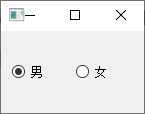
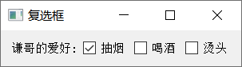

<!DOCTYPE lake>
<h2 data-lake-id="wv4W2" data-lake-index-type="2" id="wv4W2"><span data-lake-id="u2607184c" id="u2607184c">单选框</span></h2><p data-lake-id="u0174324a" id="u0174324a"><code data-lake-id="u213049d7" id="u213049d7"><span data-lake-id="u32e737de" id="u32e737de">QRadioButton</span></code><span data-lake-id="uc5b19268" id="uc5b19268">是单选按钮,它提供了一组可供选择的按钮和文本标签,用户可以选择其中一个选项</span></p><p data-lake-id="u1fd31afe" id="u1fd31afe"><span data-lake-id="u4b7145e4" id="u4b7145e4">单选框选中的信号是:</span><code data-lake-id="u0e28dc23" id="u0e28dc23"><span data-lake-id="u463233e0" id="u463233e0">toggled</span></code></p><p data-lake-id="u59c74c0f" id="u59c74c0f"></p><p data-lake-id="u3c4e9587" id="u3c4e9587"><span data-lake-id="u75bf5a55" id="u75bf5a55">代码示例：</span></p><span class="yuque-card-unsupported">[codeblock]</span><p data-lake-id="u89fc54ca" id="u89fc54ca"><span data-lake-id="u219481df" id="u219481df">如果想给</span><code data-lake-id="u3539d9da" id="u3539d9da"><span data-lake-id="uaa27ecff" id="uaa27ecff">QRadioButton</span></code><span data-lake-id="u86457123" id="u86457123">组设置监听事件，可按照如下代码添加：</span></p><span class="yuque-card-unsupported">[codeblock]</span><p data-lake-id="ufb39b08a" id="ufb39b08a"><span data-lake-id="u997b6778" id="u997b6778">​</span><br/></p><h2 data-lake-id="aYOgj" id="aYOgj"><span data-lake-id="u222f1b20" id="u222f1b20">2. 复选框</span></h2><p data-lake-id="ua75d1ed4" id="ua75d1ed4"><code data-lake-id="uec055a47" id="uec055a47"><span data-lake-id="u06834c13" id="u06834c13">QCheckBox</span></code><span data-lake-id="u27c2b6aa" id="u27c2b6aa">提供了一组带文本标签的复选框,用户可以选择多个选项</span></p><p data-lake-id="u40b75bf4" id="u40b75bf4"></p><p data-lake-id="uf6631e6c" id="uf6631e6c"><span data-lake-id="udd8d9d24" id="udd8d9d24">复选框的状态变化信号是</span><code data-lake-id="u4318559d" id="u4318559d"><span data-lake-id="ubaf99098" id="ubaf99098">stateChanged</span></code></p><p data-lake-id="u6f2277b2" id="u6f2277b2"><span data-lake-id="u59dc89ca" id="u59dc89ca">代码示例：</span></p><span class="yuque-card-unsupported">[codeblock]</span>